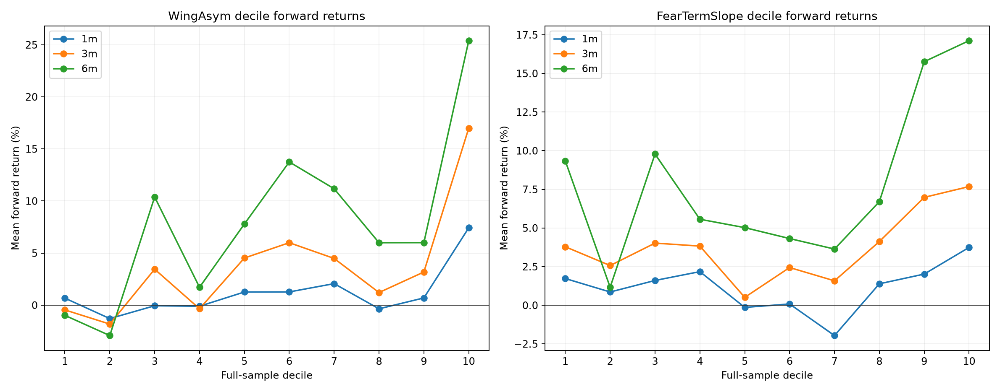
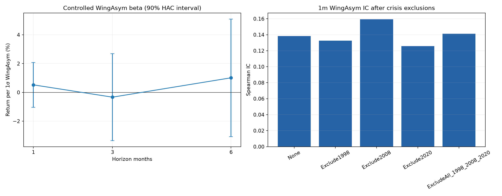

Stage 32
옵션 Fear Premium 검증
WingAsym을 새 방향 신호로 채택하기 전에 10분위, 1·3·6개월, 기존 위험변수 통제, 최근월-차근월 기울기와 위기 제외를 고정 설계로 검증했다. Stage 20·30·31은 동결했다.
판정
원시 Fear Premium 패턴은 존재하지만 Stage 20 오버레이로 승격하지 않는다. WingAsym의 3·6개월 관계와 위기 제외 강건성은 분명했다. 그러나 1개월 분위 단조성이 고정 기준에 못 미쳤고, VIX6·최근 하락·실현변동성·거시 취약도를 넣으면 추가 설명력이 사라졌다.
fear_premium_fails_overlay_gate_keep_stage20_frozen
신호와 경제적 가설
WingAsym(t-1) = IV(PUT OTM2, 최근월, t-1) - IV(CALL OTM2, 최근월, t-1) FearTermSlope(t-1) = WingAsym(최근월, t-1) - WingAsym(차근월, t-1)
WingAsym이 크다는 것은 같은 외가격 구간에서 풋 보험료가 콜 보험료보다 비싸다는 뜻이다. 이후 수익률이 높다면 시장 하락을 직접 예측하는 신호라기보다 공포가 비싸게 거래된 뒤 위험프리미엄이 정상화되는 현상일 수 있다. FearTermSlope는 그 공포가 먼 만기보다 당장 가까운 만기에 몰렸는지를 확인한다.
월 t의 수익률에는 t-1 마지막 완전 관측치만 연결했다. OTM1~4, 윈도우, 임계값을 돌려 최고 결과를 고르지 않았다.
고정 검증 순서와 승격 게이트
계단식인가
지속 기간
독립 정보인가
단기 보험 과잉인가
몇 번의 사건인가
| 게이트 | 결과 전에 고정한 조건 | 실제 | 통과 |
|---|---|---|---|
| 1개월 분위수 | 분위 평균 rho>0, p<10%, Q10-Q1>0 | rho 0.539, p 0.108 | 실패 |
| 기간 일관성 | 1·3·6개월 IC>0, 둘 이상 HAC p<10% | 세 IC 양수, 세 beta p<10% | 통과 |
| 통제 후 생존 | 1개월 Wing beta>0, p<10% | +0.523%, p 0.581 | 실패 |
| 위기 제외 | 세 위기 제외 후 1개월 IC·Q10-Q1>0 | 0.141, +5.441%p | 통과 |
10분위: 계단보다 Q10 꼬리 점프
| 기간 | 분위 평균 rho | p값 | Q10-Q1 | HAC p값 | Q10 평균 |
|---|---|---|---|---|---|
| 1개월 | 0.539 | 0.108 | +6.755%p | 0.046 | 7.423% |
| 3개월 | 0.624 | 0.054 | +17.454%p | 0.0006 | 16.992% |
| 6개월 | 0.624 | 0.054 | +26.385%p | 0.000007 | 25.399% |

1개월 Q1~Q10은 0.67, -1.29, -0.06, -0.11, 1.26, 1.27, 2.06, -0.35, 0.69, 7.42%다. 중간 분위는 정돈되지 않았고 Q10에서만 크게 튄다. 연속적 방향 알파보다 극단 공포 뒤의 꼬리 반등이라는 설명이 더 잘 맞는다.
1·3·6개월: 원시 관계는 장기까지 이어졌다
| 기간 | 관측치 | Spearman IC | 표준화 beta | HAC p값 |
|---|---|---|---|---|
| 1개월 | 348 | 0.138 | +1.938% | 0.098 |
| 3개월 | 346 | 0.225 | +4.239% | 0.0019 |
| 6개월 | 343 | 0.259 | +4.304% | 0.0238 |
1개월만 강한 기술적 반등이 아니다. 3·6개월까지 관계가 이어져 위험프리미엄 정상화의 성격이 있다. 다만 전체 표본은 1997-08부터 시작하고 모든 통제변수는 2006-04 이후에만 존재한다.
시기를 나누면 초기 효과가 더 크다
| 표본 | 1개월 beta / p | 3개월 beta / p | 6개월 beta / p |
|---|---|---|---|
| 1997-08~2006-03 | +3.579% / 0.116 | +7.398% / 0.003 | +6.965% / 0.042 |
| 2006-04~2026-07 | +0.532% / 0.451 | +1.818% / 0.116 | +2.849% / 0.041 |
통제변수를 넣기 전부터 후기 표본의 1·3개월 크기는 작다. 장기 전체 결과에는 시대 차이가 포함돼 있다. 이 구분 없이 전체 표본의 강한 beta와 후기 통제 회귀를 직접 비교하면 통제효과를 과장할 수 있다.
VIX6와 기존 위험변수를 넣자 독립성이 사라졌다
Future Return = WingAsym + VIX6 Stress + Recent 1m Return
+ Prior 21d Realized Volatility + Macro Fragility + error
| 기간 | 통제 beta | HAC p값 | 부분상관 | 추가 R² |
|---|---|---|---|---|
| 1개월 | +0.523% | 0.581 | 0.061 | 0.0035 |
| 3개월 | -0.333% | 0.856 | -0.022 | 0.0005 미만 |
| 6개월 | +1.013% | 0.683 | 0.038 | 0.0014 |
| 6개월 순차 통제 | WingAsym beta | HAC p값 |
|---|---|---|
| 공통표본 WingAsym만 | +2.849% | 0.041 |
| + VIX6 | +0.498% | 0.807 |
| + 최근수익률 | +1.986% | 0.268 |
| + 실현변동성 | +0.479% | 0.853 |
| + 거시 취약도 | +1.013% | 0.683 |
VIX6 하나가 6개월 효과의 대부분을 흡수했다. WingAsym은 VIX6 stress와 +0.274, 최근 1개월 수익률과 -0.280, 실현변동성과 +0.376의 상관을 보인다. 옵션시장이 공포의 가격을 더해 주는지보다 기존 공포 상태를 비선형으로 재표현하는 쪽에 가깝다.
FearTermSlope는 제안한 반등 메커니즘을 지지하지 않았다
| 기간 | 무통제 IC | 무통제 beta / p | 통제 beta / p | Q10-Q1 / p |
|---|---|---|---|---|
| 1개월 | 0.018 | +0.776% / 0.327 | -1.454% / 0.066 | +2.013%p / 0.575 |
| 3개월 | 0.084 | +1.844% / 0.176 | -3.221% / 0.047 | +3.895%p / 0.492 |
| 6개월 | 0.106 | +2.569% / 0.101 | +1.594% / 0.410 | +7.777%p / 0.334 |
최근월 공포가 차근월보다 비싸면 이후 반등이 커질 것이라는 양의 가설은 통과하지 못했다. 통제 후 1·3개월은 오히려 유의한 음수다. 이 부호를 보고 새 하락 알파로 바꾸지 않았다. 가설이 틀린 뒤 방향을 뒤집는 순간 사후 최적화가 된다.
1998·2008·2020이 전부는 아니다
| 표본 | 1개월 IC / Q10-Q1 | 3개월 IC / Q10-Q1 | 6개월 IC / Q10-Q1 |
|---|---|---|---|
| 전체 | 0.138 / +6.755%p | 0.225 / +17.454%p | 0.259 / +26.385%p |
| 1998 제외 | 0.133 / +4.043%p | 0.243 / +14.719%p | 0.256 / +22.888%p |
| 2008 제외 | 0.159 / +8.530%p | 0.257 / +20.177%p | 0.300 / +30.156%p |
| 2020 제외 | 0.126 / +6.698%p | 0.217 / +17.395%p | 0.255 / +26.205%p |
| 세 위기 모두 제외 | 0.141 / +5.441%p | 0.272 / +17.171%p | 0.299 / +26.305%p |

원시 패턴은 위기 세 번에만 기대지 않는다. 다만 위기를 빼도 남는다는 사실은 통제 후 독립 알파가 된다는 뜻과 다르다. 두 검정은 서로 다른 질문에 답한다.
인과적 Q10 타이밍은 드물고 복리는 약했다
| 1998-06~2026-07 진단 경로 | CAGR | Sharpe | MDD | 투자 개월 |
|---|---|---|---|---|
| K200 보유 | 12.576% | 0.554 | -56.58% | 337 |
| WingAsym expanding Q10만 보유 | 1.559% | 0.221 | -24.55% | 11 |
| WingAsym expanding Q1만 보유 | -0.712% | -0.131 | -23.62% | 6 |
| Q10 매수·Q1 매도 | 2.070% | 0.257 | -29.74% | 17 |
Q10의 11개 투자 달 평균은 4.82%, 양의 달 비율은 72.7%였다. 조건부 반등의 흔적은 있으나 신호가 너무 드물어 현금 대기 기준 장기 복리가 낮다. 거래비용도 빠진 메커니즘 진단이므로 전략 성과로 승격하지 않았다.
Stage 20 유지와 연구 결론
원시 이상현상은 버리지 않는다. 3·6개월 관계와 위기 제외 결과는 장기 옵션시장에서 풋 공포 프리미엄이 실제로 존재할 가능성을 뒷받침한다.
다만 현재 포트폴리오가 이미 VIX6로 같은 위험 상태를 반영한다. 추가 오버레이는 중복 노출과 과적합 위험만 늘릴 수 있어 보류한다.
| 동결 Stage 20, 2007-04~2026-07 | CAGR | Sharpe | MDD | Calmar |
|---|---|---|---|---|
| Stage20 VIX6 | 9.397% | 0.987 | -14.015% | 0.671 |
Stage 32는 기대수익 조정도, 위험예산 modifier도 만들지 않았다. Stage 20·30·31 파일은 분석 전후 동일하다.
한계와 재현 파일
- 1·3·6개월 수익률이 겹쳐 horizon별 검정은 완전히 독립적이지 않다. 같은 horizon lag의 HAC를 썼다.
- 장기 수익률은 K200 최근월 선물이다. 연속선물 롤 효과가 일부 섞일 수 있다.
- 통제변수의 공통 시작은 2006-04다. 장기 전체와 통제 표본의 차이에는 시대효과가 포함된다.
- 전체 표본 분위 경계는 사후 통계다. expanding 진단은 과거 자료만 쓰지만 거래비용은 없다.
| 파일 | 역할 |
|---|---|
fear_premium_validation.py | 신호·분위수·HAC·통제·위기 제외·인과 타이밍·무결성 감사 |
outputs/validation_report.json | 고정 설계, 네 승격 게이트와 전체 결과 |
outputs/decile_forward_returns.csv | 10분위별 1·3·6개월 수익률 |
outputs/controlled_predictive_regressions.csv | 기존 위험변수 통제 결과 |
outputs/crisis_exclusion_robustness.csv | 1998·2008·2020 제거 결과 |
outputs/causal_decile_timing_diagnostic.csv | expanding 분위 경계 진단 |
원본 옵션 IV XLSX와 K200 선물 XLSX는 읽기 전용으로 사용했다. 분석 전후 SHA-256·크기·수정시각이 동일하다.